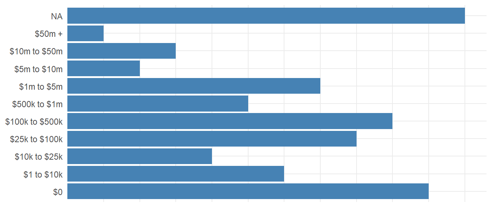
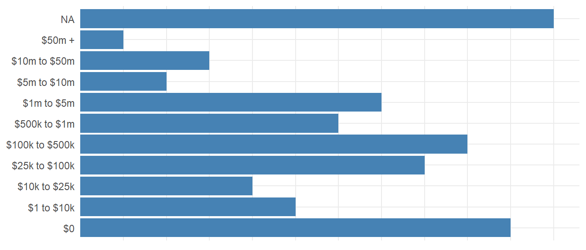
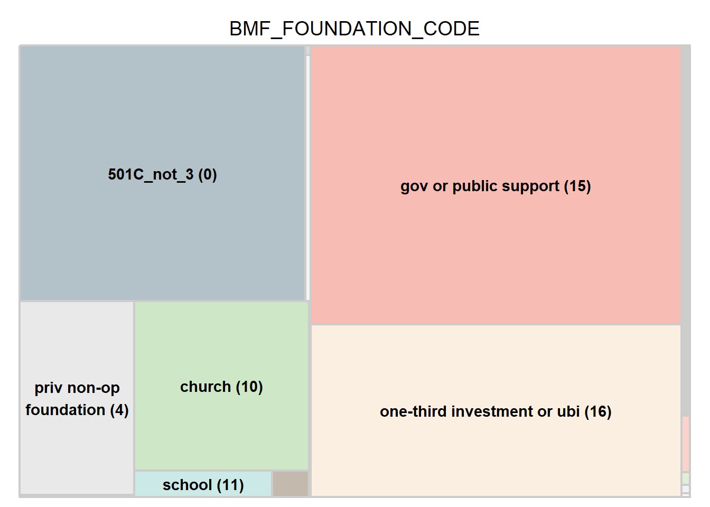
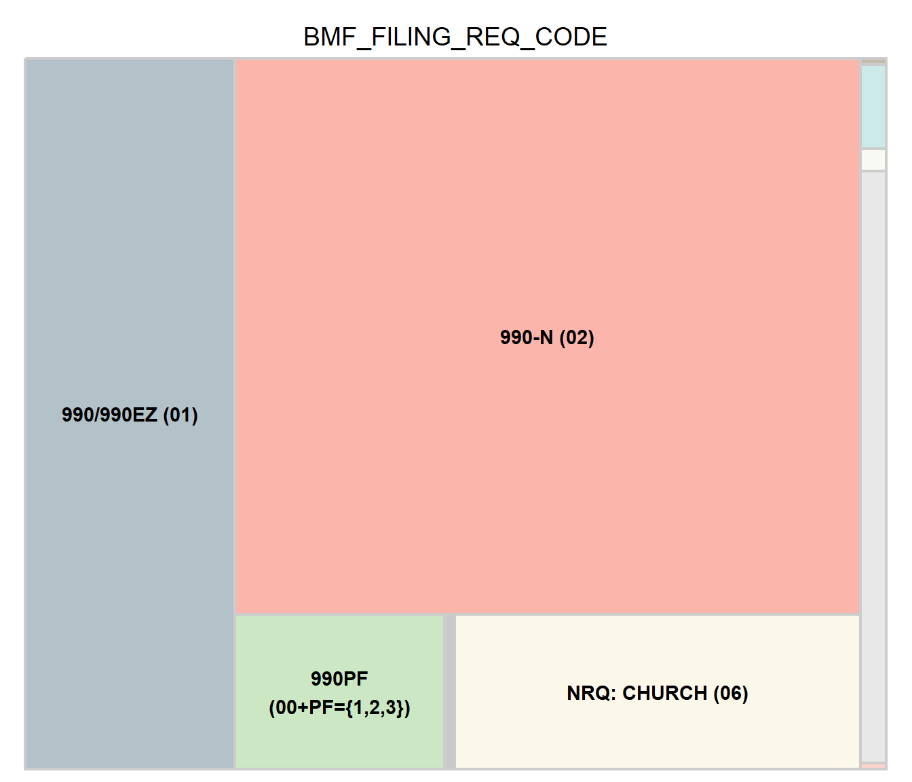

5 IRS Fields (BMF)
Documentation for the fields that originate from the IRS Business Master File (BMF).
5.1 BMF_STATUS_CODE
The Exempt Organization (EO) Status Code defines the type of exemption held by the organization.
| BMF_STATUS_CODE | Freq |
|---|---|
| Unconditional Exemption (01) | 1,937,470 |
| Conditional Exemption (02) | 662 |
| Trust (12) | 6,983 |
| Split Interest Trust (25) | 905 |
| NA | 1,570,547 |
Trust (12):
Trust described in section 4947(a)(2) of the Internal Revenue Code
Split Interest Trust (25):
Organization terminating its private foundation status under section 507(b)(1)(B) of the Code
5.2 BMF_AFFILIATION_CODE
Affiliation Code defines the organizational grouping. In the context of an IRS 990 Group Exemption structures:
- Central Organizations: At the top of the group exemption structure is the central organization, often a national or overarching entity that holds the group exemption letter from the IRS. This central organization is responsible for overseeing the entire group and ensuring compliance with IRS regulations.
- Intermediate Organizations-: Intermediate organizations are entities within the group that are affiliated with the central organization but operate at a regional, state, or local level. These intermediate organizations may have their own separate tax-exempt status but are covered under the group exemption umbrella of the central organization. They typically handle operations, fundraising, and programs within their specific geographic area or focus.
- Subordinate Organizations: Below the intermediate organizations are the subordinate organizations, which are the local chapters, branches, or affiliates of the group. These organizations are also covered under the group exemption and operate under the oversight of both the central and intermediate organizations. `
| code | role | affiliation | label |
|---|---|---|---|
| 3 | INDY | NONE | INDEPENDENT (3) |
| 1 | PARENT | NETWORK | NETWORK-PARENT (1) |
| 2 | INTERMEDIATE | NETWORK | NETWORK-INTERM (2) |
| 6 | PARENT-REGULAR | GROUPEXM | GROUP-EXM-PARENT-REGULAR (6) |
| 7 | INTERMEDIATE | GROUPEXM | GROUP-EXM-INTERM (7) |
| 8 | PARENT-CHURCH | GROUPEXM | GROUP-EXM-PARENT-CHURCH (8) |
| 9 | SUBORDINATE | GROUPEXM/NETWORK | SUBORDINATE (9) |
The use of intermediate organizations in a group exemption structure allows for centralized management and oversight while still accommodating regional or local operations and initiatives. It helps streamline administrative processes, ensures consistency in compliance, and provides a framework for collaboration and coordination among affiliated entities.
| BMF_AFFILIATION_CODE | Freq |
|---|---|
| INDEPENDENT (3) | 2,058,970 |
| NETWORK-PARENT (1) | 0 |
| NETWORK-INTERM (2) | 0 |
| GROUP-EXM-PARENT-REGULAR (6) | 3,378 |
| GROUP-EXM-INTERM (7) | 99 |
| GROUP-EXM-PARENT-CHURCH (8) | 713 |
| SUBORDINATE (9) | 428,775 |
| NA | 1,024,632 |
INDEPENDENT (3) “This code is used if the organization is an independent organization or an independent auxiliary (i.e., not affiliated with a National, Regional, or Geographic grouping of organizations).”,
NETWORK-PARENT (1) “This code is used if the organization is a central type organization (no group exemption) of a National, Regional or Geographic grouping of organizations.”,
NETWORK-INTERM (2) “This code is used if the organization is an intermediate organization (no group exemption) of a National, Regional or Geographic grouping of organizations (such as a state headquarters of a national organization).”,
GROUP-EXM-PARENT-REGULAR (6) “This code is used if the organization is a parent (group ruling) and is not a church or 501(c)(1)organization.”,
GROUP-EXM-INTERM (7) “This code is used if the organization is a group exemption intermediate organization of a National, Regional or Geographic grouping of organizations.”,
GROUP-EXM-PARENT-CHURCH (8) “This code is used if the organization is a parent (group ruling) and is a church or 501(c)(1) organization.”,
SUBORDINATE (9) “This code is used if the organization is a subordinate in a group ruling.”)
5.3 BMF_DEDUCTIBILITY_CODE
Deductibility Code signifies whether contributions made to an organization are deductible.
| BMF_DEDUCTIBILITY_CODE | Freq |
|---|---|
| UDC (0) | 35,172 |
| YES (1) | 1,660,328 |
| NO (2) | 249,968 |
| BY TREATY(4) | 552 |
| NA | 1,570,547 |
5.4 BMF_ASSET_CODE
Asset levels based upon the last year of financials reported.

| BMF_ASSET_LEVEL | Freq |
|---|---|
| $0 | 1,245,337 |
| $1 to $10k | 76,856 |
| $10k to $25k | 41,860 |
| $25k to $100k | 119,860 |
| $100k to $500k | 184,573 |
| $500k to $1m | 73,574 |
| $1m to $5m | 117,855 |
| $5m to $10m | 30,444 |
| $10m to $50m | 38,234 |
| $50m + | 17,427 |
| NA | 1,570,547 |
5.5 Income Levels (BMF_ASSET_CODE)

| BMF_INCOME_LEVEL | Freq |
|---|---|
| $0 | 1,255,752 |
| $1 to $10k | 59,409 |
| $10k to $25k | 34,423 |
| $25k to $100k | 149,568 |
| $100k to $500k | 227,063 |
| $500k to $1m | 66,682 |
| $1m to $5m | 93,392 |
| $5m to $10m | 22,387 |
| $10m to $50m | 26,753 |
| $50m + | 10,591 |
| NA | 1,570,547 |
5.6 Tax Exempt Purpose Codes (BMF_TAX_EXEMPT_PURP)
When applying for tax exempt status from the IRS, nonprofit founders report organizational purpose on their application, which is used by the IRS to make a determination on whether the organization qualifies for tax-exempt status. These codes differ from the NTEE taxonomies in that each code is binary (yes/no), and they are NOT mutually exclusive, so a nonprofit mission can fulfill one or several of these purposes.
IRS Tax-Exempt Purpose Codes for 501C3 Organizations: [ See Instructions pp 6-7 ]
- Charitable Purpose [yes/no]
- Religious Purpose [yes/no]
- Educational Purpose [yes/no]
- Scientific Purpose [yes/no]
- Literary Purpose [yes/no]
- Public Safety Purpose [yes/no]
- Amateur Sports Purpose [yes/no]
- Prevent Cruelty to Animals and/or Children [yes/no]
The other 501C Types have similar tax-exempt purpose categories:
5.7 Foundation Codes (BMF_FOUNDATION_CODE)
- 501C_not_3 (0): All organizations except 501(c)(3)
- priv op foundation (2): Private operating foundation exempt from paying excise taxes on investment income
- priv op foundation (other) (3): Private operating foundation (other)
- priv non-op foundation (4): Private non-operating foundation
- status suspended (9): Suspense
- church (10): Church 170(b)(1)(A)(i)
- school (11): School 170(b)(1)(A)(ii)
- hospital/ med research (12): Hospital or medical research organization 170(b)(1)(A)(iii)
- public university support (13): Organization that operates for the benefit of a college or university and is owned or operated by a governmental unit 170(b)(1)(A)(iv)
- governmental unit (14): Governmental unit 170(b)(1)(A)(v)
- gov or public support (15): Organization that receives a substantial part of its support from a governmental unit or the general public 170(b)(1)(A)(vi)
- one-third investment or ubi (16): Organization that normally receives no more than one-third of its support from gross investment income and unrelated business income and at the same time more than one-third of its support from contributions, fees, and gross receipts related to exempt purposes 509(a)(2)
- subsidiary (17): Organizations operated solely for the benefit of and in conjunction with organizations described in 10 through 16 above 509(a)(3)
- public safety (18): Organization organized and operated to test for public safety 509(a)(4)
- supporting org type1 (21): 509(a)(3) Type I
- supporting org type2 (22): 509(a)(3) Type II
- supporting org type3 (23): 509(a)(3) Type III functionally integrated
- supporting org type3 nfi (24): 509(a)(3) Type III not functionally integrated
| BMF_FOUNDATION_CODE | Freq |
|---|---|
| 501C_not_3 (0) | 783,396 |
| priv op foundation (2) | 526 |
| priv op foundation (other) (3) | 13,369 |
| priv non-op foundation (4) | 238,657 |
| status suspended (9) | 2,428 |
| church (10) | 317,436 |
| school (11) | 38,845 |
| hospital/ med research (12) | 10,354 |
| public university support (13) | 2,713 |
| governmental unit (14) | 543 |
| gov or public support (15) | 1,110,194 |
| one-third investment or ubi (16) | 685,474 |
| subsidiary (17) | 33,864 |
| public safety (18) | 108 |
| supporting org type1 (21) | 5,227 |
| supporting org type2 (22) | 1,122 |
| supporting org type3 (23) | 810 |
| supporting org type3 nfi (24) | 304 |
| NA | 271,197 |

5.7.1 Supporting Organization Types
TYPE I
A Type I supporting organization must be operated, supervised or controlled by its supported organization(s), typically by giving the supported organization(s) the power to regularly appoint or elect a majority of the directors or trustees of the supporting organization. The relationship between the supported organization(s) and the supporting organization is sometimes described as similar to a parent-subsidiary relationship.
TYPE II
A Type II supporting organization must be supervised or controlled in connection with its supported organization(s), typically by having a majority of the directors or trustees of the supported organization(s) serve as a majority of the trustees or directors of the supporting organization. The relationship between the supported organization(s) and the supporting organization is sometimes described as similar to a brother-sister relationship.
TYPE III
A Type III supporting organization must be operated in connection with one or more publicly supported organizations. All supporting organizations must be responsive to the needs and demands of, and must constitute an integral part of or maintain significant involvement in, their supported organizations. Type I and Type II supporting organizations are deemed to accomplish these responsiveness and integral part requirements by virtue of their control relationships. However, a Type III supporting organization is not subject to the same level of control by its supported organization(s). Therefore, in addition to a notification requirement, Type III supporting organizations must pass separate responsiveness and integral part tests.
FUNCTIONALLY INTEGRATED
A Type III organization must satisfy one of three alternative integral part tests.
Alternative 1: Activities test
- Direct furtherance prong. Substantially all of the supporting organization’s activities must be direct furtherance activities.
- Direct furtherance activities are conducted by the supporting organization itself, rather than by a supported organization.
- Fundraising, managing non-exempt-use assets, grant making to organizations, and grant making to individuals (unless it meets certain requirements) are not direct furtherance activities.
- But for prong. In addition, substantially all of such activities must be activities in which, but for the supporting organization’s involvement, the supported organization would normally be involved.
Examples include holding and managing facilities used by a church for its religious purposes, operating food pantries for a group of churches that normally would operate food pantries themselves, and maintaining local parks for a community foundation that otherwise would maintain those parks.
Alternative 2: Parent of supported organizations
- Governance. The supporting organization must have the power to appoint a majority of the officers, directors or trustees of each of its supported organizations.
- Substantial degree of direction. In addition, the supporting organization must perform “parent-like” activities by exercising a substantial degree of direction over the policies, programs and activities of the supported organizations.
Alternative 3: Supporting a governmental entity
- Notice 2014-4 provides interim guidance for supporting organizations that want to qualify as functionally integrated because they are supporting a governmental entity.
Note: The transitional rule set out in the notice is not intended to signal what future proposed regulations will require with respect to qualifying as functionally integrated by supporting a governmental entity. No Type III supporting organization will qualify as functionally integrated by reason of satisfying this transitional rule once final regulations under §509 are published.
NON-FUNCTIONALLY INTEGRATED
Distribution requirement. A Type III non-FISO must distribute its distributable amount each year to one or more of its supported organizations.
Under final regulations, the distributable amount equals the greater of (1) 85 percent of the organization’s adjusted net income for the prior taxable year and (2) 3.5 percent of the aggregate fair market value of the organization’s non-exempt use assets, with certain adjustments.
Certain excess amounts may reduce the distributable amount in subsequent years (for up to five years after the excess amount is generated).
Attentiveness requirement. It is not enough for a Type III non-FISO to maintain a certain level of distributions to a supported organization. Those distributions must be sufficiently important to the supported organization to ensure that the supported organization has sufficient reason to pay attention to the supporting organization’s role in its operations. Distributions to a particular supported organization are sufficient to ensure such attentiveness if the amount of support:
Equaled at least 10 percent of the supported organization’s total support for the supported organization’s prior year; Was necessary to avoid interruption of the carrying on of a particular substantial function or activity of the supported organization;
or
Based on all facts and circumstances (including actual evidence of attentiveness) was sufficient to ensure attentiveness. At least one-third of the supporting organization’s distributable amount must be distributed to supported organizations (1) that meet this attentiveness requirement and (2) to which the supporting organization is responsive.
5.8 Filing Requirement Code (BMF_FILING_REQ_CODE)
| BMF_FILING_REQ_CODE | Freq |
|---|---|
| 990/990EZ (01) | 696,890 |
| 990-N (02) | 1,628,405 |
| 990PF (00+PF={1,2,3}) | 151,568 |
| GROUP RETURN (03) | 7,399 |
| 990-BL (04) | 31 |
| NRQ: CHURCH (06) | 293,132 |
| NRQ: 501C1 GOV (07) | 782 |
| NOT RQ: RELIG ORG (13) | 10,162 |
| NOT RQ: STATE DIV (14) | 2,673 |
| NOT RQ: ALL OTHER (00) | 71,408 |
| Undocumented Category (11) | 671 |
| NA | 653,446 |
